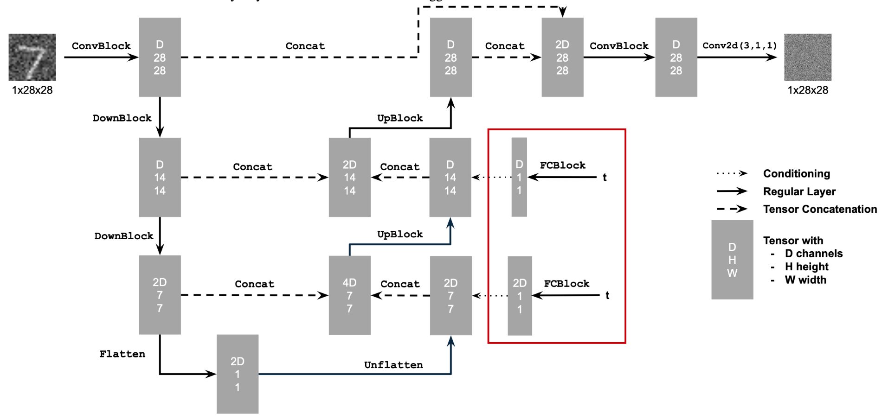
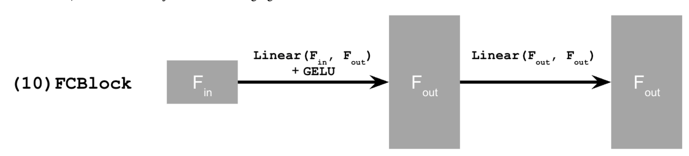
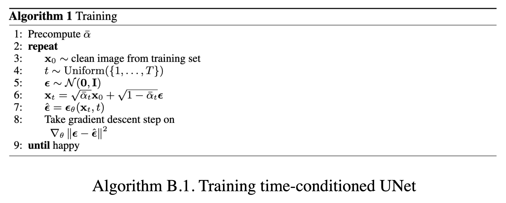
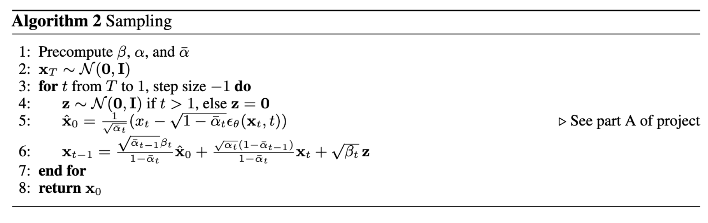
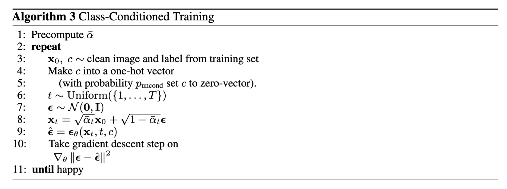
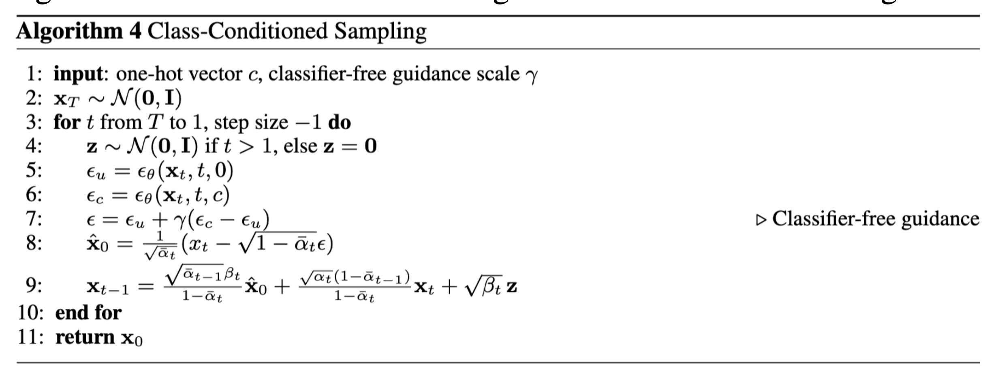

Section 1.1

First, we implement these equations (which are equivalent) to add noise to an image. This is otherwise known as the forward process.
Here are test image at noise level [250, 500, 750].


NOTE: Apogloies for any small screenshots.
In this project, we will implement and deploy diffusion models for image generation
In part A, we will play around with diffusion models, implement diffusion sampling loops, and use them for other tasks such as inpainting and creating optical illusions
We will write "sampling loops" that use the pretrained DeepFloyd denoisers. The hope is to produce high quality images.
First, we implement these equations (which are equivalent) to add noise to an image. This is otherwise known as the forward process.
Here are test image at noise level [250, 500, 750].
Here, we take noisy images for timesteps [250, 500, 750], but use Gaussian blur filtering to try to remove the noise.

As you can see, it's not that effective.
Now, we'll use a pretrained diffusion model to denoise.
Because this diffusion model was trained with text conditioning, we also need a text prompt embedding. We provide the embedding for the prompt "a high quality photo" for you to use. Later on, we use our own prompts.
We do the following for this section:
For the 3 noisy images from 1.2 (t = [250, 500, 750]): (1) Using the UNet, denoise the image by estimating the noise. (2) Estimate the noise in the new noisy image (3) Remove the noise from the noisy image to obtain an estimate of the original image. (4) Visualize the original image, the noisy image, and the estimate of the original image
Furthermore, I scaled the noise according to specific coefficients associated with each timestep. This process involves dividing the noisy image by the estimated noise at each step, adjusting for each image's noise level to maximize clarity.
Below are the results.

Using the following equation:

where:

We will implement iterative denoising!
Unlike a single-step approach, iterative denoising gradually reconstructs the image by removing noise over multiple steps, producing finer details and better image quality, especially for heavily degraded images. At each step, noise is incrementally removed based on specific calculations involving noise scaling coefficients, which balance the levels of signal and noise at each stage
Iterative denoising recreates the image via removing itertativly noise. At each step, noise is incrementally removed based off specific calculations using noise scaling coefficinets, which help balance levels of signal and noise at every stage.


In part 1.4, we use the diffusion model to denoise an image. Another thing we can do with the iterative_denoise function is to generate images from scratch
This effectively denoises pure noise.
The diffusion model attempts to denoise the 'nosiy' image (in this case, a high-quality photo iterativley). In other words, we use the created photo as the inital input. Using iterative denoising, each noisy image is denoised via guiadnce from the text pomrpt embedding. Below are five different images using this apporach.

In 1.6, we utilize classifer-free guidance (CFG) to the diffusion model to improve image quality. CFG utlizes both conditional and uncondintional noise estimates, which allows the model to emphasize relevant details while keeping some randomness. CFG essentially combines two noise estimates to porduce more coherent and detailed images. We utilize CFG ontop of the iterative denoising that we implemented in the previous sections, but, of course, CFG combines the noise estimate at each iteration. Thus, the model refines the noise prgoressively till we get a more structured image.
Note, that we had to run UNet twice. Once for conditional prompt embedding, and the other for unconditional.

In part 1.4, we take a real image, add noise to it, and then denoise. This effectively allows us to make edits to existing images. The more noise we add, the larger the edit will be. This works because in order to denoise an image, the diffusion model must to some extent "hallucinate" new things -- the model has to be "creative." Another way to think about it is that the denoising process "forces" a noisy image back onto the manifold of natural images. Here, we're going to take the original test image, noise it a little, and force it back onto the image manifold without any conditioning. Effectively, we're going to get an image that is similar to the test image (with a low-enough noise level). This follows the SDEdit algorithm.
We start by running the forward process to the original image. The noise varies across predefined noise levels of [1, 3, 5, 7, 10, 20]. Afterwards, we apply the CFG based iterative denoising. Below are the results.
Once again, we are starting from a "high quality photo". Our first result is of the Campinelle


Our second image is of a Duck.


And our third is a porshe.


We can use the same process to our own hand-drawn illustrations!


We can use the same procedure to implement inpainting. That is, given an image x_orig, and a binary mask m, we can create a new image that has the same content where m is 0, but new content wherever m is 1. To do this, we can run the diffusion denoising loop. But at every step, after obtaining x_t, we "force" x_t to have the same pixels as x_orig where m is 0, i.e.: x_t <- m * x_t + (1 - m) * forward(x_orig, t)
Essentially, we leave everything inside the edit mask alone, but we replace everything outside the edit mask with our original image — with the correct amount of noise added for timestep t.
Our first result is of the Campinelle


Below is a Porshe!


And here is spongebob


Now, instead of starting with a random high-quality image, we can also start with a text of our choosing!
below are the results. We start with 'a rocketship'


Followed with 'a forest'


and we end with 'a pencil'!


In this part, we are finally ready to implement Visual Anagrams and create optical illusions with diffusion models. Here, we create an image that, when flipped, showcases a different image!
We start by creating an image that looks like "an oil painting of people around a campfire", but when flipped upside down will reveal "an oil painting of an old man".
To do this, we will denoise an image x_t at step t normally with the prompt "an oil painting of an old man", to obtain noise estimate e1.
But at the same time, we will flip x_t upside down, and denoise with the prompt "an oil painting of people around a campfire", to get noise estimate e2. We can flip e2 back, to make it right-side up, and average the two noise estimates.< /p>
We can then perform a reverse/denoising diffusion step with the averaged noise estimate.
e1 = UNet(x_t, t, p1)
e2 = flip(UNet(flip(x_t), t, p2))
e = (e1 + e2) / 2
where UNet is the diffusion model UNet from before, flip(·) is a function that flips the image, and p1 and p2 are two different text prompt embeddings. And our final noise estimate is e.
First is the old man to people around a campfire.

Followed with a man with a hat to a village in the mountains.

Finally, we end with waterfall in village to old man with beard.

We can also consturct hybrids like in project 2!
In order to create hybrid images with a diffusion model we can use a similar technique as above. We will create a composite noise estimate e, by estimating the noise with two different prompts, and then combining low frequencies from one noise estimate with high frequencies of the other. The algorithm is:
e1 = UNet(x_t, t, p1)
e2 = UNet(x_t, t, p2)
e = f_lowpass(e1) + f_highpass(e2)
where UNet is the diffusion model UNet, f_lowpass is a low pass function, f_highpass is a high pass function, and p1 and p2 are two different text prompt embeddings. Our final noise estimate is e.
We start with a skull and a waterfall.

Followed with a hamburger and a village in the mountains.

Finally, we end with a pencil and a bird

In this portion, we will train our own diffusion model on MNIST
We train a UNet to remove Gaussian noise from images. The UNet architecture is good for this task due to its ability to capture both local and global features through its encoder-decoder structure with skip connections. The implementation starts by defining the fundamental components of the UNet model.

We mainly follow this scheme, where the blocks are defined as follows

For our UNet architecture, we use convolutional layers with GELU activation functions in the encoder for downsampling and transposed convolutions in the decoder for upsampling. We also include skip connections between encoder and decoder layers. The model was trained using MSE loss on image pairs and optimized via Adam optimizer.
Below is a visualization of the different noising processes over varying sigma values of [0, 0.2, 0.4, 0.5, 0.6, 0.8, 1]

We set the sigma value to 0.5 during training and dynamically add image batches using a batch size of 256 for 5 epochs. We set the learning rate of 1e-4. Other than that, we follow standard ML paradigms on training NNs.
And here is the loss over steps during training.

Furthermore, here are the denoised results at the first and fifth epoch.


Our denoiser was trained on a sigma val of 0.5. Here are the results when being tested on a varying amount of noise.

For the next section, we focus on training a time-conditioned UNET for iterative denoising via a DDPM framework. The model is trained to predict noise rather than clean images using a variance schedule that starts at 0.0001 and ends at 0.02 over 300 timesteps. Rather than training separate models for every noise level, the UNet is conditioned on timestep t. This allows a single model to handle varying noise levels throughout the diffusion process. Similarly, we are attempting to minimize the mean squared error between predicted and actual noise at randomly sampled timesteps.
 Here's the training algorithm that we follow:
Here is the time-conditioned UNet training loss graph

Furthermore, the sampling process is very similar as done in Part A of the project.
And here are the gifs for various epochs:


Notice that on varying values of sigma, this model already performs better than the previous model?
For our final model, we utilize two additional FCBlocks for processing class as well as time, where we represent class as a one-hot vector.
The model implements CFG by randomly dropping class conditioning throughout the training process. Furthermore, during generation, we combine conditional and unconditional predictions using a guidance value of 5 as we've done in Part A.
The training process goes as follows:
Here is the class-conditioned UNet training loss graph

Finally, the sampling process is detailed as follows:
Here are the gifs for the epochs